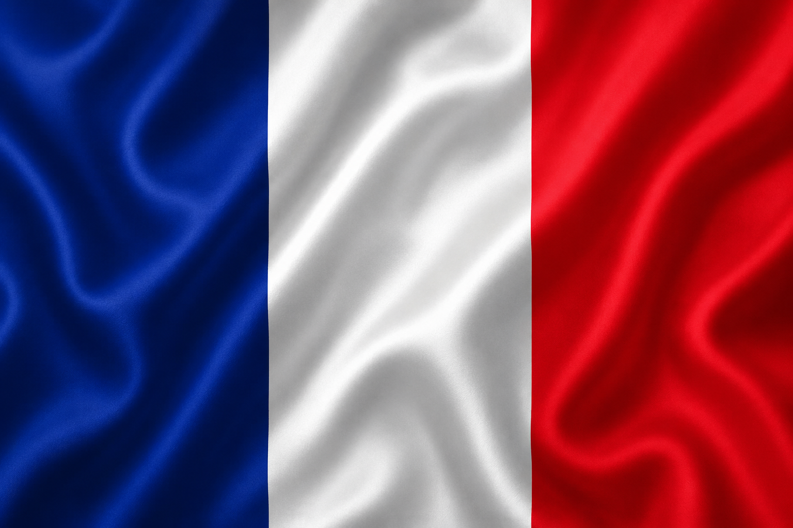
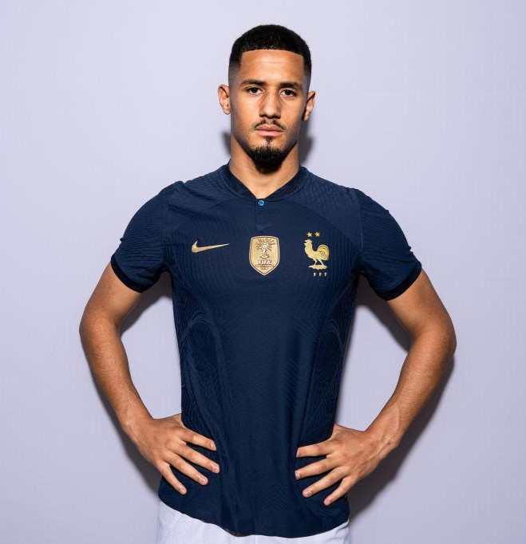
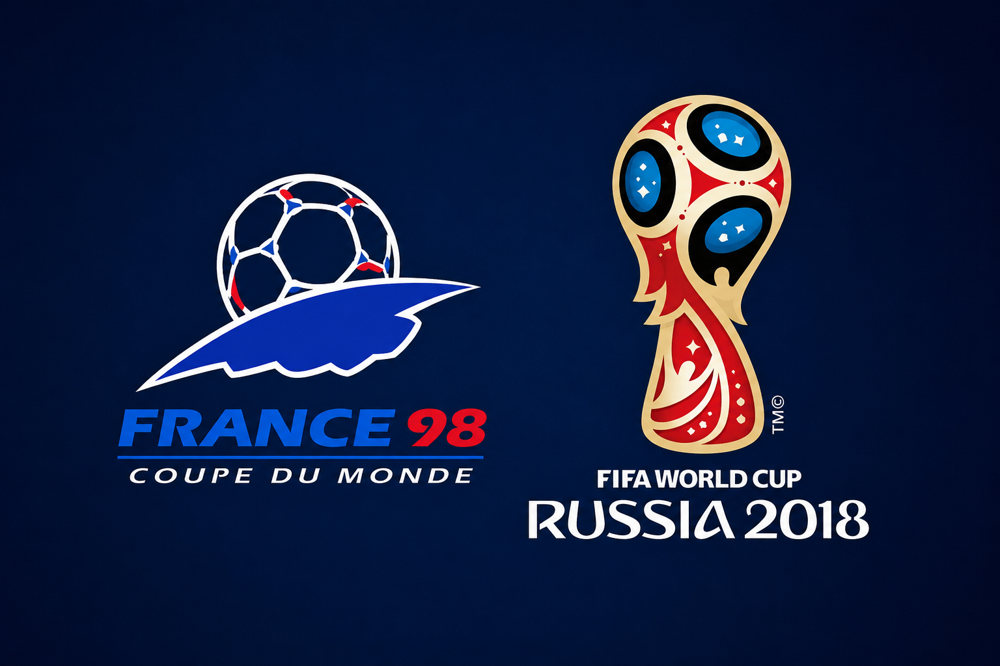
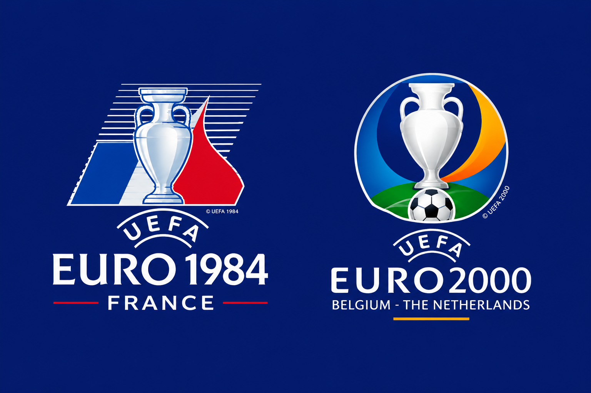
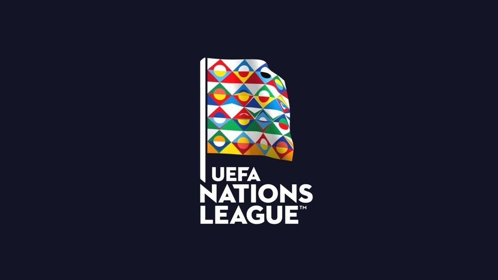
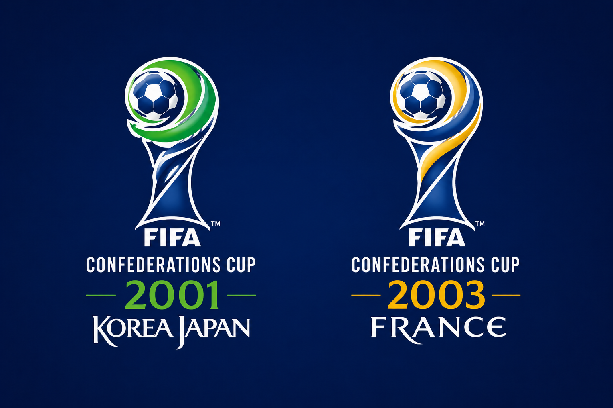
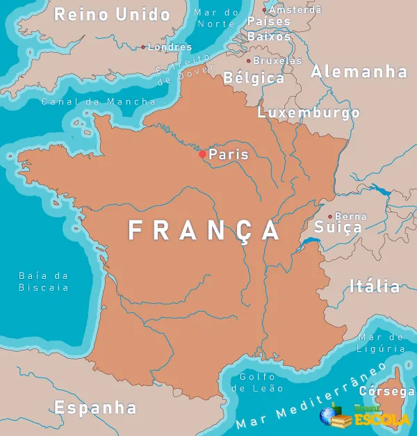
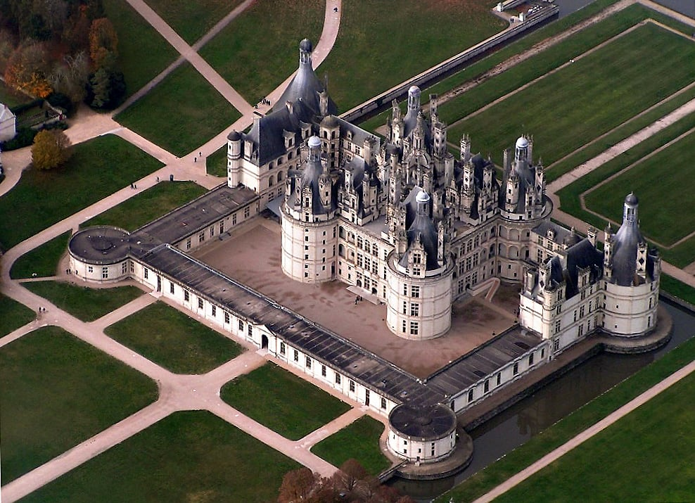
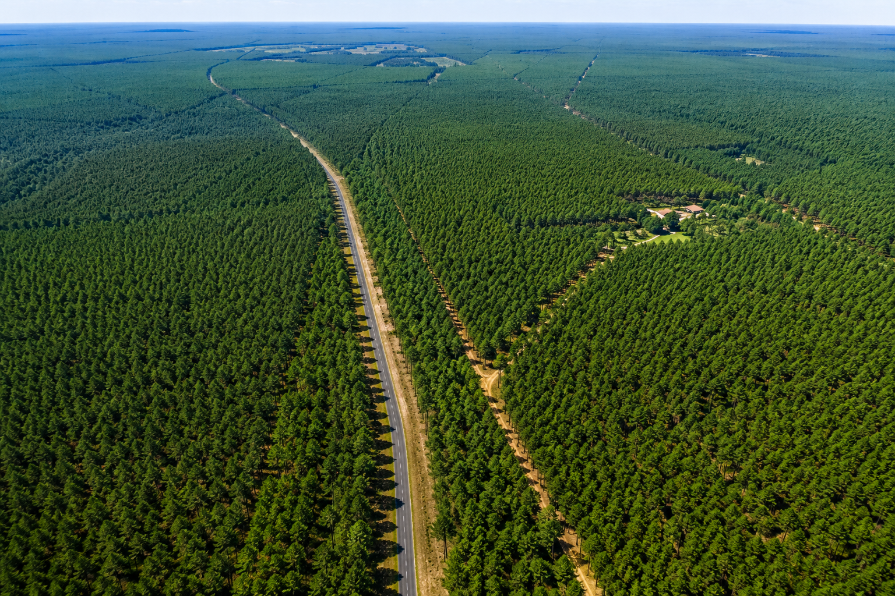
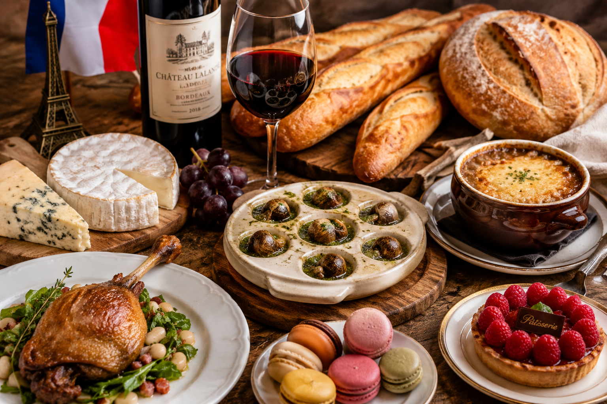

Terra Francesa
Entre monumentos históricos, paisagens encantadoras e cultura inesquecível, a França revela a beleza de cada detalhe.
Confira o futebol
História
Sobre a França
A história da França começou na Antiguidade, quando a região era habitada pelos gauleses. No século I a.C., o território foi conquistado pelos romanos liderados por Júlio César. Após a queda do Império Romano, os francos passaram a dominar a região, dando origem ao nome do país. Em 1789, aconteceu a Revolução Francesa, que marcou o fim da monarquia absoluta e difundiu os ideais de liberdade, igualdade e fraternidade. Anos depois, Napoleão Bonaparte expandiu a influência francesa pela Europa. Nos séculos XIX e XX, a França participou da Primeira Guerra Mundial e da Segunda Guerra Mundial. Atualmente, é um dos países mais influentes do mundo, conhecido por sua cultura, história, gastronomia e monumentos famosos como a Torre Eiffel

Nosso Futebol
Seleção Francesa e suas conquistas
Jogadores
Kylian Mbappé
Antoine Griezmann
(Atacante/Meia)
Ousmane Dembélé
(Atacante)
Aurélien Tchouaméni
(Meio-campista)
Eduardo Camavinga
(Meio-campista)
Jules Koundé
(Defensor)

William Saliba
(Defensor)
Theo Hernández
(Lateral)
Mike Maignan
(Goleiro)
Didier Deschamps
(Técnico)
Conquistas

Copa do Mundo
2 títulos
(1998 e 2018)

Eurocopa
2 títulos
(1984 e 2000)

Liga das Nações da UEFA
1 título
(2021)

Copa das Confederações
2 título
(2001 e 2003)
Curiosidade
A Torre Eiffel não deveria ser permanente
A famosa Torre Eiffel foi construída para a Exposição Universal de 1889 e deveria ser desmontada após 20 anos.
O Museu do Louvre é o mais visitado do mundo
O Museu do Louvre abriga milhares de obras, incluindo a famosa Mona Lisa.

Maior país da União Europeia
Entre os países da União Europeia, a França possui o maior território.

Possui milhares de castelos
Há mais de 40 mil castelos espalhados pelo país, muitos deles abertos para visitação.
Trens muito rápidos
A França foi pioneira nos trens de alta velocidade com o TGV, que pode ultrapassar 300 km/h.

País mais visitado do mundo
A França é o país mais visitado do mundo, atraindo milhões de turistas todos os anos graças à sua história, cultura, gastronomia e monumentos famosos.

Floresta artificial
A França possui a maior floresta artificial da Europa Ocidental, a Floresta das Landes, localizada no sudoeste do país.
